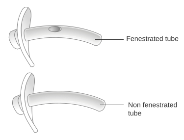
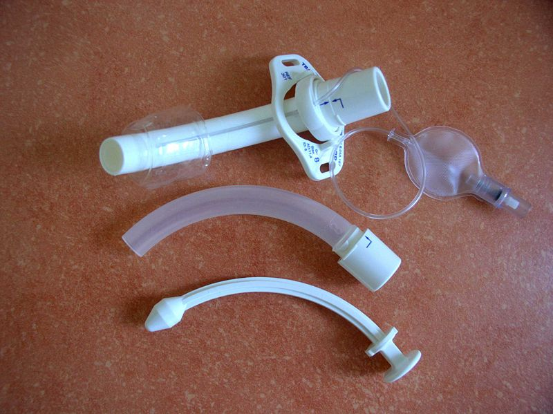
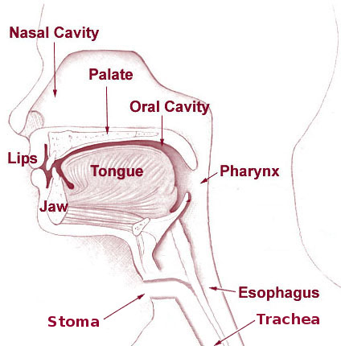

Quando o desmame se arrasta, o tubo translaríngeo vira parte do problema: trabalho resistivo, sedação, sem fala nem reabilitação. A traqueostomia não cura o desmame — ela é a plataforma para sustentá-lo. E carrega nuances que matam: o mito do “precoce salva”, a fístula que sangra, a válvula que sufoca.



“Três testes de respiração falharam por fadiga. O pulmão sarou; a bomba não. A pergunta deixou de ser quando extubar e virou como sustentar o desmame.”
Homem, 61 anos, choque séptico há três semanas, agora com fraqueza adquirida na UTI. Pulmão radiologicamente limpo, P/F recuperado. Três SBTs falharam por fadiga, com RSBI subindo. Dia 12 de tubo.
O balanço carga × capacidade está travado: o tubo longo e estreito impõe trabalho resistivo, e a sedação para tolerá-lo atrofia o diafragma e cria delirium. A própria via aérea virou carga.
“Fazer a traqueostomia logo — ela acelera o desmame e devíamos ter feito no dia 3.” Antes da conduta: o que a evidência diz sobre o tempo? E, depois de feita, que perigos ela traz?
(1) “Precoce salva/acelera” é mito. O ensaio TracMan (precoce ≤4 d × tardio ≥10 d) não mostrou ganho de mortalidade nem menos dias de ventilador — e cerca de dois terços do grupo tardio nunca precisaram da traqueostomia. Traqueostomizar cedo é tratar demais quem teria sido extubado.
(2) Válvula de fala com cuff inflado mata. A válvula é unidirecional: o ar entra por ela e sai ao redor do tubo, pela via aérea alta. Com cuff inflado não há saída → o paciente não expira → barotrauma e parada.
(3) Sangramento sentinela = fístula traqueo-inominada até prova em contrário. Hiperinsufle o cuff para tamponar, comprima com o dedo no estoma contra o esterno (Utley) e leve ao centro cirúrgico.
Indicação clara por desmame prolongado de bomba, reavaliada em torno de D10–14 — não impaciência no D3. PDT à beira-leito se anatomia, coagulação e exigência ventilatória permitirem; cirúrgica se não. Depois: menos sedação, reabilitação do diafragma, trabalho resistivo menor, desmame pela traqueostomia e decanulação pelos critérios.
Oito perguntas para separar o que a traqueostomia faz do que dela se espera — e os perigos que a cercam.
A resistência de um tubo segue Poiseuille: R ∝ L/d⁴. A trach é curta; a translaríngea é longa e às vezes estreita. O vão entre as curvas é trabalho imposto que sai do lado da carga do desmame.
Decanular repete os dois portões do V12, agora com um terceiro teste: tolerar a desinsuflação do cuff e a oclusão (capping).
Honestidade do modelo: o instrumento d’O tubo usa Poiseuille calibrado (ΔP ∝ Rref·Q^1,8, com Rref ∝ L/d⁴; trach ≈ 0,55× a ETT de mesmo diâmetro pela menor extensão). A decanulação é um classificador determinístico que espelha a extubação. Os ganhos reais da TQT são trabalho resistivo, sedação, conforto, fala e reabilitação; a redução de espaço morto é modesta.
Cinco questões sobre indicar, temer e desfazer a traqueostomia — com gabarito de cinco campos.
Vinte e cinco questões varrendo a base: gases e mecânica (Respira) e a máquina, as curvas e os modos (Ventila 1–8). A Parte 2 — espontâneo, conflito e saída — vem no módulo 14.
Cada questão traz a razão curta e a ponte para o módulo.